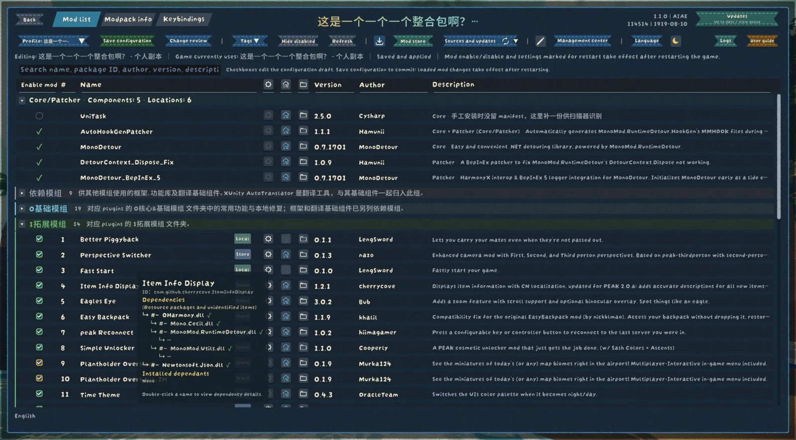

不用退出游戏，在设置菜单里管好所有模组
不用退出游戏、不用开管理器，在 PEAK 的设置菜单里就能看到装了哪些模组、各自是什么版本、谁依赖谁，改配置、改快捷键、更新、启停、卸载，都在同一个界面里完成。
安装：用 r2modman 或雷霆商店管理器一键安装，依赖会自动装好入口：主菜单或暂停菜单的「设置」→「模组概览」

五个板块
每块点进去有详细介绍。
一次修改是怎么生效的
改参数、改快捷键、勾选启停都是同一个流程。安装、更新、卸载不走这条路，点了就排队执行。
第一步改动改一个设置、录一个按键、勾一个模组。
第二步进草稿名称旁出现橙色角标，还没写进文件。
第三步保存配置保存前可以在「变更检查目录」核对每一项。
第四步按时机生效立即、下一局，或者重启游戏。每项都会标出来。
安装
用 r2modman 或雷霆商店管理器一键安装，依赖会自动装好。进游戏后，在主菜单或暂停菜单的「设置」里打开「模组概览」。
不推荐手动安装：依赖比较多，有的还要放进 BepInEx 的 core 文件夹。请用模组管理器安装；自动部署脚本以后会放在这里。
文件放在哪
管理器替你保存的东西都在 BepInEx/config/ModConfigEnhance/，只有四个文件夹。
language语言文件你自己的翻译，一种语言一个文件。
profiles配置方案每套方案的参数、快捷键、启停，整合包介绍和素材。
output导出的东西待翻文本、发布的整合包、日志导出。
data管理器自己的数据运行状态、商店缓存、自动备份、你改过的说明。
已装的整合包和更新助手的备份在 BepInEx/MCE/。
改文件之前一定先备份
安装、更新、卸载、整理文件夹、切换整合包，这些要动模组文件的操作都由一个独立的小助手执行。它只在有任务时启动，带一个前台进度窗口，做完就退出。
要替换游戏正在用的文件时，它会等你退出游戏再动手。每次改动前都先备份，失败自动回退；已完成的更新也能手动回退。
不会被拦下的操作：大部分检查都只是提醒，确认一次就能继续。真正不能做的只有几件：停用或卸载管理器自己和它运行所需的三个库，以及会伤到文件的操作（路径越界、链接、目标被占用）。